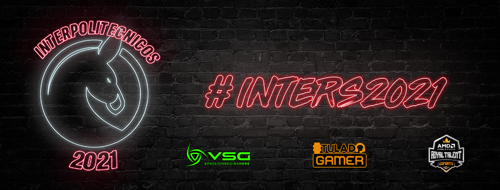
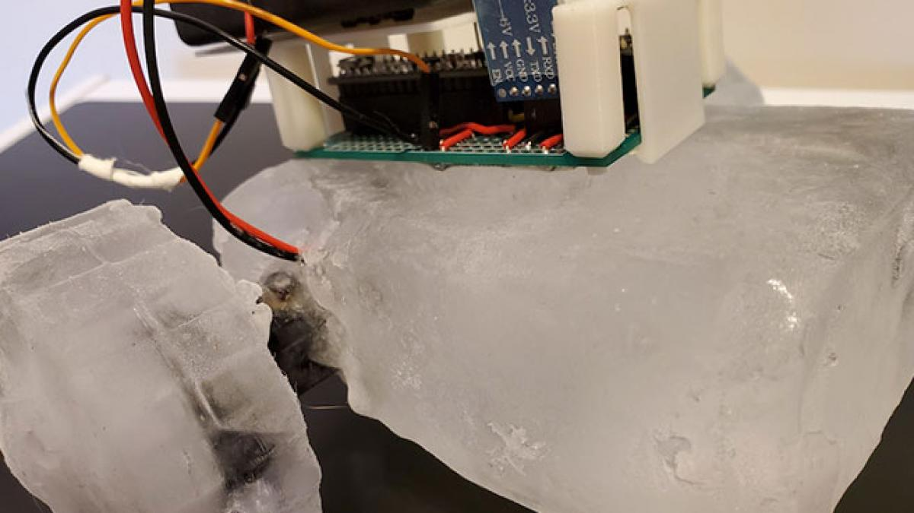
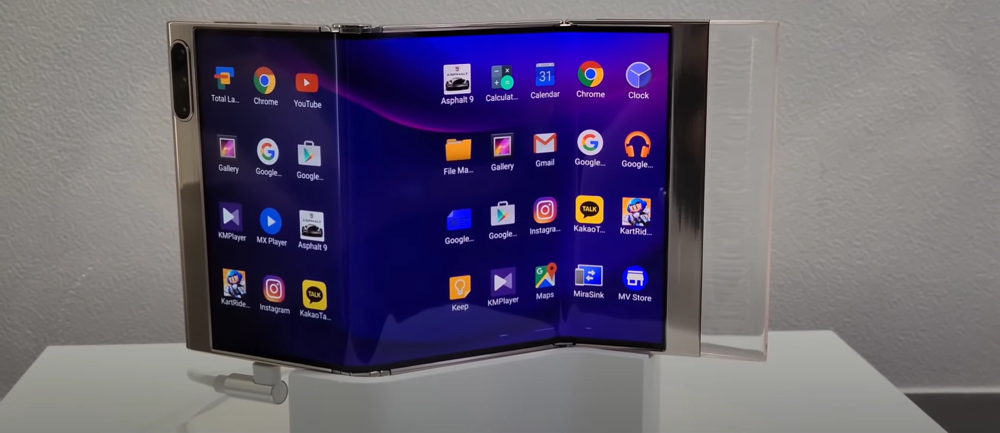

Datos personales
-
Benitez Merino Leonardo Jonathan
14 de novimebre de 1998
22 años
Azcapotzalco,Ciudad de Mexico
lbenitezm0104@alumno.ipn.mx
Escorpio
Tobi
@TobiPOV
Leo Merino
JonathanBmer

Datos Escolares
-
CET 1 "Walter Cross Buchanans"
Promedio: 7.0
Escuela Superior de computo
Promedio: 8.4
Primer semestre
- Fundamentos de programacion
- Matematicas discretas
- Comunicacion oral y escrita
- Calculo
- Mecanica y electromagnetismo
- Fundamentos economicos
Segundo semestre
- Algoritmos y estructura de datos
- Algebra lineal
- Fundamentos de diseño digital
- Calculo multivariable
- Ingenieria, etica y sociedad
- Finanzas empresariales
Tercer semestre
- Analisis y diseño de algoritmos
- Paradigmas de Programacion
- Ecuaciones diferenciales
- Bases de datos
- Diseño de sistemas digitales
- Liderazgo personal
Promedio General: 8.4
Nivel y semestre actual: Superior en 4to semestre >
Pasatiempos
- Tocar la guitarra
- Leer
- Ver videos de deportes
- Jugar videojuegos
Deportes favoritos
- Soccer
- Volleyball
- Tennis
- Gimnasia
Materias favoritas
- Liderazgo personal
- Fundamentos de inteligencia artificial
- Procesamiento digital de imagenes
- Matematicas avanzadas para la ingenieria
Lenguajes de programacion conocidos
- Python
- Java
- C/C++
- R
Otros temas de interes
- Esports
- Musica
- Competencias
- Viajes

Noticia de tecnologia 1: Un robot de hielo con el que explorar otros planetas
El prototipo de robot desarrollado por el laboratorio GRASP de la Universidad de Pensilvania en Filadelfia. Lo han bautizado como IceBot porque, fundamentalmente, está hecho de hielo. Y bajo tres premisas fundamentales: un dispositivo autorreconfigurable, autorreplicable y autorreparable.Una de las propuestas del equipo es que, en un futuro, se envíen dos tipos de robots en las misiones de exploración interplanetaria. Por un lado, habría un robot que se encargaría de buscar y recolectar los materiales de fabricación y, por el otro, un robot en el que se instalasen o reparasen las piezas de hielo.
Visita Imnovation
Noticia de tecnologia 2: ¿Dejerias que un abogado robot de defendiera?
Suena descabellado, pero lo cierto es que los sistemas de software de inteligencia artificial (IA) -los programas de computadora que pueden actualizarse y "pensar" por sí solos- están siendo cada vez más utilizados en el entorno legal. Joshua Browder describe su aplicación DoNotPay como "el primer abogado robot del mundo". Ayuda a componer declaraciones legales. Le dices al bot de charla cuál es tu problema (como una apelación contra una multa por mal estacionamiento) y te sugiere lo que cree que es el mejor lenguaje legal para utilizar al respecto.

Visita BBC
Noticia de tecnologia 3: Apple y su imperio de aplicaciones
En menos de siete días, la tecnológica ha anunciado dos acuerdos que le permiten dar carpetazo a investigaciones por monopolio en su tienda de aplicaciones. Eso sí, concediendo lo justo y manteniendo las limitaciones para los creadores de las 'apps' que representan la mayoría de sus ingresos. El primer trato del fabricante del iPhone, alcanzado con un grupo de pequeños desarrolladores de Estados Unidos, se ha saldado autorizando a los creadores de software a ponerse en contacto con los usuarios a través de correo para informarles sobre mecanismos de pago externos a los de la compañía.
Visita ABC
Noticia de tecnologia 4: ¿Son los moviles plegables el futuro
El sector de los smartphones plegables está en plena ebullición. Apenas han pasado tres semanas desde que Samsung presentara sus nuevos móviles flexibles—el Galaxy Z Fold 3 y el Galaxy Z Flip 3— cuando la marca surcoreana ha aprovechado el Encuentro Internacional de Pantallas de Información (iMiD, por sus siglas en inglés), celebrado en Seúl, para mostrar un modelo aún más ambicioso.
Visita ElPais